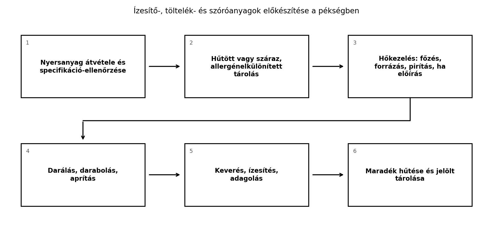

Ez az alfejezet a járulékos anyagok csoportján belül azokat az anyagokat mutatja be, amelyek már nem a tészta alapvázát, hanem annak ízét, töltelékét és külső megjelenését alakítják. A sütőüzemi munkában ezeknél a nyersanyagoknál a legnagyobb az allergén-keresztszennyeződés, a hőkezelési és a tárolási hiba kockázata, ezért minden technológiai lépést a higiénia–technológia–minőség hármasban tárgyalunk.
Egy pékségben ugyanabból az alaptésztából készülhet natúr vizes zsemle, mákos ízesítésű, diós kalács és sajtos stangli is. A különbséget nem a dagasztás, hanem a járulékos anyagok megválasztása, előkészítése és adagolása adja. Ha a mákot rosszul forrázzák, kiszárad; ha a diót a dióallergén-tudatos termék mellett tárolják, a termék csomagolásán hamis „diómentes” jelölés születhet; ha a lekvár túl híg, a töltelék kifut a sütés közben. A nyersanyag-átvételtől a maradék hűtéséig minden lépésnél tudni kell, mi a minőségi követelmény és mi a fogyasztói kockázat.
Képzelj el egy pékségi előkészítő asztalt: bal oldalon a hűtőszekrényben a túró- és tejalapú töltelékek, középen a száraz, jelölt tárolódobozokban a mák, a dió és a mogyoró, jobb oldalon a fűszer- és magkeverékek, a kamra polcán a lekvárok és a kakaós bevonók. A folyamat az anyagok útját mutatja, de a kockázatokat a kereszteződések adják: ugyanaz a merőkanál, ugyanaz a daráló, ugyanaz a szakajtólemez.
Az alábbi folyamatábra a járulékos anyagok tipikus előkészítési és felhasználási lépéseit szemlélteti.

Az ábra nélkül is olvasható: a vásárolt anyag előbb ellenőrzésen megy át, azután hőmérsékleti és allergénszempontból megfelelő helyre kerül, majd a technológiai lap szerint hőkezeljük, aprítjuk, keverjük, adagoljuk; a megmaradt anyagot pedig csak lezárva, jelölve lehet visszatárolni.
Definíció. Ízesítőanyagnak nevezzük azokat a nyersanyagokat, amelyeket kis mennyiségben adagolunk azért, hogy a termék jellegzetes ízét és illatát kialakítsuk. Ide tartoznak a fűszerek, az étkezési aromák, az aromás növényi kivonatok, a só és az édesítőanyagok is, de ebben az alfejezetben a fűszerekre, magvakra, kakaóra és csokoládéra összpontosítunk; a só szerepét az A só és a sóoldat tárgyalja.
Definíció. Töltelékanyagnak nevezzük azt a félkész anyagot, amelyet a megformázott tésztára, illetve tésztarétegbe helyezve sütéssel vagy sütés nélkül a késztermék részévé teszünk. A töltelék lehet gyümölcs-, túró-, mák-, dió-, mogyoró-, kakaó- vagy csokoládéalapú.
Definíció. Felületi díszítőanyagnak nevezzük azokat az anyagokat, amelyeket a termék tetejére viszünk fel sütés előtt vagy után: szórómagvak, sajt, porcukor, fondant, csokoládébevonó, lekváráthúzó és hasonló anyagok.
Szabály. A járulékos anyagokat mindig nyersanyag-specifikációval kell átvenni, és az allergénösszetételüket az 1169/2011/EU rendelet II. melléklete szerinti lista alapján kell azonosítani (pontos felsorolás ellenőrizendő).
Higiénia. Az ízesítő-, töltelék- és díszítőanyagok sok esetben hőkezelés nélkül kerülnek a termékre, vagy csak a sütés végén melegszenek át. Ezért az előkészítő munka tisztasága közvetlen fogyasztói kockázatot okozhat.
A pékségben használt járulékos anyagokat a következő csoportokba sorolhatjuk, a teljes tésztához adagolt mennyiség és a technológiai szerep szerint:
| Csoport | Jellemző anyagok | Tipikus felhasználás | Fő allergénkockázat |
|---|---|---|---|
| Fűszerek | őrölt fahéj, szegfűszeg, kardamom, gyömbér, köménymag | mézeskalács, kalács, vajas tészták | ritkán; keresztszennyeződésként lehet dió, mogyoró |
| Magvak | mák, dió, mogyoró, mandula, napraforgómag, tökmag | töltelék, szóróanyag, dúsított tészta | diófélék, földimogyoró, szezámmag |
| Kakaó és csokoládé | kakaópor, étcsokoládé, tejcsokoládé, bevonó | kakaós tészta, töltelék, felületi bevonat | tej, szója, dió |
| Gyümölcskészítmények | gyümölcsíz, lekvár, aszalt gyümölcs, kandírozott gyümölcs | töltelék, mazsolás tészta, bevonat | kén-dioxid, földimogyoró-keresztszennyeződés |
| Túró- és tejtermék-alapú töltelékek | félzsíros túró, tehéntúró, tejföl, tejszín | túrós táska, túrós batyu, túrós lepény | tej |
Megjegyzés. A mák nem a diófélék közé tartozik az EU-allergénlistán, de a feldolgozóüzemekben gyakran érintkezhet dióval vagy mogyoróval, ezért a vásárolt darált mák specifikációjában keresni kell a „dióféléket tartalmazhat” figyelmeztetést.
A fűszerek a növény szárított részeiből őrölt vagy egész formában kerülnek a tésztába. A sütőiparban leggyakoribb az őrölt fahéj, a szegfűszeg, a kardamom, a gyömbér, a szerecsendió és a köménymag.
Szabály. A fűszereket fénytől, nedvességtől és idegen szagtól védve, lezárt tárolóban kell tartani. Az őrölt fűszerek aromája gyorsabban csökken, mint az egész fűszeré, ezért kisebb mennyiséget rendeljünk és forgassuk a készletet.
Definíció. Aroma alatt az élelmiszer-jogban azokat a készítményeket értjük, amelyeket az élelmiszer illatának és ízének kialakítására adnak, és nem elsődlegesen táplálkozási célból fogyasztjuk. A pékségben az „aroma” sokszor folyékony vagy por alakú készítmény, például vanília-, mandula-, citrom- vagy rumaroma.
Gyakorlat. A köménymagot egészben használjuk a kenyér- vagy péksütemény-tészta szórására is. A köménymagot előzetesen át kell vizsgálni idegen anyag, penészes mag vagy rögösödés szempontjából; ha vizes tészta tetejére szórjuk, a magok párás környezetben is jó tapadást kapnak a felületre.
Figyelem. Az „aroma” szó nem jelenti azt, hogy a készítmény allergénmentes. Az aromahordozó lehet tejcukor, szójalecitin vagy dióolaj; ezt a gyártói specifikációból kell ellenőrizni.
A töltelékanyagok közös követelménye, hogy kenhető, formázható, a tésztában bennmaradó, sütés közben nem túl folyós, és a készterméket mikrobiológiailag is elfogadható állapotban hagyó anyag legyen.
Túrótöltelék. A túrótöltelék alapja a tehéntúró, sovány vagy félzsíros változatban. A töltelékhez a túrót áttörjük, ízesítjük cukorral, citromhéjjal, mazsolával, vaníliával, szükség szerint búzadarával vagy tejföllel kötjük. A túrótölteléket nem melegen, hanem hűtve tartjuk: a pulton csak a munkaszakasz idejéig (pl. legfeljebb 30 percig, tanulási érték) tarthatjuk hűtés nélkül, a hűtött túrót a felhasználásig legfeljebb 5 °C-on tároljuk (ellenőrizendő: a pékség HACCP-terve, hatósági útmutató).
Máktöltelék. A mákot darálva használjuk. A darált mák alacsony nedvességtartalmú, de a benne lévő olaj miatt könnyen avasodik. A máktölteléket általában forrázzuk: a darált mákot vízzel vagy tejjel, cukorral, citromhéjjal és gyakran rummal vagy rumaromával összefőzzük, amíg kenhető massza nem keletkezik. A mák forrázása előtt a mákot érdemes átválogatni, mert a gubacs, a szártörmelék vagy a kődarab a darálót károsíthatja és a tölteléket szennyezi.
Dió- és mogyorótöltelék. A dióbevonat és a mogyorókrém alapja a darált dió vagy mogyoró. A diót a legjobb közvetlenül a felhasználás előtt darálni, mert a darált diófelület az avasodásra hajlamos. A diós tölteléket cukorral, esetleg mézzel, fahéjjal, citromhéjjal, tejjel vagy vízzel keverjük. A mogyorótöltelék (mogyorókrém) a mogyoróból (Corylus), vagyis a diófélék közé tartozó anyagból készül, ezért diófélék-allergént tartalmaz; ne keverjük össze a földimogyoróval, amely hüvelyes, és az 1169/2011/EU szerint külön allergéncsoport. A kettőt mindig külön kell kezelni és jelölni.
Gyümölcsíz, lekvár. A gyümölcsíz (lekvár) a gyümölcsből és cukorból sűrűre főzött készítmény. Sütőipari célra a vízaktivitása és a kenhetősége a döntő. A túl híg lekvár kifut a tésztából, megégeti a sütőlemezt; a túl sűrű lekvár nehezen adagolható és a fogyasztónak túl édes vagy ragacsos lesz. A gyümölcsízhez adott kén-dioxid szulfit allergént jelent, amelyet 10 mg/kg (SO₂-ként) felett a csomagolt terméken jelölni, a csomagolás nélkül árusított terméknél pedig a vásárló számára hozzáférhetővé tenni kell (ellenőrizendő: 1169/2011/EU 44. cikk, hazai végrehajtási rendelet).
Kakaó és csokoládé. A kakaópor a kakaóbab zsírtalanított, őrölt részéből készül; a csokoládé kakaómasszából, kakaóvajból és cukorból, a tejcsokoládé ezen felül tejporból áll. A kakaóport tésztába, kakaós töltelékbe és bevonatba is használjuk. A kakaóvajas csokoládét (kuvertürt) bevonáshoz a gyártói hőmérséklet-görbe szerint temperálni kell; a növényi zsíros bevonómassza temperálás nélkül, a gyártói hőmérsékletre olvasztva használható. A nem megfelelő hőmérséklet rontja a fényt és a roppanósságot (ellenőrizendő: gyártói adatlap).
Definíció. Előkészítésnek nevezzük azokat a műveleteket, amelyek a vásárolt anyagot a technológiai lap által előírt hőmérsékletre, nedvességtartalomra, szemcseméretre és higiéniai állapotra hozzák.
A gyakori előkészítő műveletek:
Szabály. A hőkezelt tölteléket a felhasználásig vagy gyorsan le kell hűteni, vagy dokumentált melegen tartással kell kezelni. A főzött, forrázott töltelék és krém a készítés végétől 2 órán belül 20 °C alá, további 4 órán belül 5 °C alá hűljön, és legfeljebb 5 °C-on tároljuk; ha melegen tartjuk, legalább 63 °C-on, legfeljebb 2 óráig. A kb. 5–60 °C-os sáv a mikrobák szaporodásának kedvez (tanulási érték, ellenőrizendő: a pékség HACCP-terve, NÉBIH-útmutató).
HACCP. A töltelék- és díszítőanyagok előkészítésénél különösen az alábbi pontokat kell vizsgálni:
| Veszély | Megelőzés | Ellenőrzés (tanulási példa) |
|---|---|---|
| Túrótöltelék mikrobiális szaporodása | hűtött tárolás, gyors feldolgozás | a töltelék maghőmérséklete felhasználáskor legfeljebb 5 °C; a munkaszakasz megszakítása esetén hűtőbe helyezés (ellenőrizendő: üzemi határ) |
| Dió, mogyoró, szezámmag allergén-keresztszennyeződés | külön tárolódoboz, jelölt eszköz, későbbi gyártási sorrend | vizuális és tárolási gyakorlat ellenőrzése; a termék címkéje megegyezik-e a receptúrával |
| Főzött töltelék (máktöltelék, túrós/tojásos krém) hűtése | gyors lehűtés, lapos edény, hűtött tárolás | 2 órán belül 20 °C alá, további 4 órán belül 5 °C alá; a mért értékek naplózása (tanulási érték; ellenőrizendő: HACCP-terv, NÉBIH-útmutató) |
| Idegen anyag a mákban, dióban, gyümölcsízben | szita, mágneses vizsgálat, beszállítói specifikáció | napi átvételi szemle, szitaszűrés |
| A híg lekvár kifut a sütőlemezre és megégeti a felületet | a töltelék sűrűségének ellenőrzése, a technológiai lap szerinti mennyiség | a készterméken nincs kifolyt, égett lekvár |
Allergén. Az alfejezet anyagainál a leggyakoribb allergének:
Szabály. Ahol az üzemben „diómentes”, „mogyorómentes” vagy „allergénmentes” terméket gyártanak, ott ezeket az anyagokat fizikailag és időben is el kell különíteni. A közös daráló, a közös kenőecset, a közös sütőlemez vagy a nem tisztított mérleg a leggyakoribb keresztszennyeződési pont.
Példa. Készítsünk 1,02 kg dióbevonatot kalácsfélékhez. A technológiai lap receptje (tanulási példa, lisztre vetített százalék nem értelmezhető, ezt tömegre számoljuk):
| Anyag | Mennyiség (kg) |
|---|---|
| darált dió | 0,500 |
| porcukor | 0,350 |
| mazsola | 0,150 |
| fahéj | 0,005 |
| reszelt citromhéj | 0,005 |
| rumaroma | 0,010 |
| Összesen | 1,020 |
Ellenőrzés: 0,500 + 0,350 + 0,150 + 0,005 + 0,005 + 0,010 = 1,020 kg, a keverék tömege tehát megegyezik a kért 1,02 kg-mal.
Példa. Túrótöltelék 100 db túrós táskahoz, darabonként 25 g töltelékkel. A szükséges tölteléktömeg 100 × 25 g = 2,5 kg. A keverék receptje (tanulási példa):
| Anyag | Mennyiség (kg) |
|---|---|
| félzsíros túró | 2,000 |
| tejföl | 0,150 |
| búzadara | 0,100 |
| porcukor | 0,200 |
| citromhéj | 0,010 |
| mazsola | 0,040 |
| Összesen | 2,500 |
A keverék mennyisége pontosan 2,5 kg, ellenőrzésként az összeadás megfelel.
Példa. Mákos keverék készítése. A keverék alaptömege 1,0 kg: darált mák 0,4 kg, víz 0,4 kg, cukor 0,2 kg. A forrázás után a víz beépül a mákba, a keverék így 1,0 kg. Ha a forráskor a víz egy része elpárolog, a tényleges tömeget mérni kell, és a töltőadagolást a maradék tömegre kell igazítani.
Előírás. A fogyasztók élelmiszerekkel kapcsolatos tájékoztatásáról szóló 1169/2011/EU rendelet II. melléklete szerint a fenti összetevők közül allergénként kell jelölni a tejet, a tojást, a dióféléket, a földimogyorót, a szezámmagot, a szóját és a kén-dioxid/szulfitot, ha a határértéket meghaladja (pontos mérték és felsorolás ellenőrizendő). A Magyar Élelmiszerkönyv termékcsoport-előírásai a lekvárokra, gyümölcsízekre, kakaóra és csokoládéra külön is adnak összetételi követelményeket (előírásszámok és határértékek ellenőrizendőek).
Gyakorlat. A beérkező anyag címkéjét a pékségnek meg kell őriznie, és a töltelékanyagok specifikációját a nyersanyag-átvételi listához kell kötni. Az allergéninformációt a saját gyártmánylapba és a fogyasztói tájékoztatóba is át kell vezetni.
Egy pékség húsvét előtt diós és mákos kalácsot is készített. A diót egy közös tárolóban tartotta a mazsolával és a porcukorral, alatta egy nyitott zacskó mogyorós ropogós díszítőanyaggal. A diós kalács készítése után a munkatárs ugyanazzal a kanállal adagolta a mákos tölteléket, és a diós tároló fedelét nyitva hagyta. Néhány nap múlva egy vásárló enyhe allergiás reakciót jelzett, mert a csomagolt mákos kalács címkéjén nem szerepelt a dió. A belső vizsgálat a közös merőkanalat és a nyitott tárolót azonosította a keresztszennyeződés okaként. A tanulság: a diós és mogyorós anyagokat lezárva, címkézve, külön kanállal, a mákos anyagoktól elkülönítve kell kezelni, és a gyártási sorrendet dokumentálni kell.
Cél. Töltelék- és szóróanyagok higiénikus előkészítése és allergénszerinti elkülönítése a pékségben.
Eszközök és anyagok. Tiszta munkafelület, mérleg, kanalak, spatula, daráló vagy robotgép darálófeltéttel, szita, hőmérő, lezárható tárolódobozok, allergéncímkék, egyéni védőkesztyű.
Higiénia. Tiszta munkaruha, hajháló, ékszer nélkül. Kézmosás, a sebek vízzáró, színes kötéssel ellátva. A munkafelületet és az eszközöket előtte és utána tisztítani és szükség szerint fertőtleníteni kell. Beteg dolgozó nem vehet részt a munkában.
Gépbiztonság. A darálót vagy robotgépet csak betanítás után, felügyelettel szabad használni. Áramtalanítás nélkül soha ne tisztítsuk, ne nyúljunk a vágó- és daráló egységbe. A tisztítás és a tartozékcsere előtt győződjünk meg arról, hogy a gép kikapcsolt és újraindítás ellen biztosított.
Lépések: 1. Ellenőrizd a technológiai lapot és a gyártmánylapot: melyik anyagból mennyi kell, milyen allergénjelöléssel. 2. Vedd elő a lezárt, címkézett anyagokat. A diós, mogyorós, szezámos anyagokat elkülönítve, külön szakaszban kezeld. 3. Válogasd át a mákot, diót, mogyorót, magvakat, és távolítsd el az idegen anyagot. 4. Daráld le az anyagot a technológiai lap szerinti szemcseméretre. A dió és mogyoró után a gépet tisztítsd, mielőtt más anyagot darálnál. 5. A mákot, kakaót vagy fűszerkeveréket forrald fel a megadott folyadékkal, közben folyamatosan keverd. 6. A túrótölteléket hidegen keverd, és azonnal hűtsd vissza, ha nem használod fel. 7. A kész tölteléket lezárható, címkézett edénybe tedd; a címkén a termék neve, a gyártás időpontja és az allergén(ek) legyenek. 8. A munkafelületet, a mérleget és a kanalakat azonnal tisztítsd meg, majd dokumentáld a HACCP-lapon a hőmérsékletet és az esetleges eltéréseket.
Ellenőrzési pontok. A túrótöltelék hőmérséklete a felhasználásig legfeljebb 5 °C. A máktöltelék állaga kenhető, de nem folyik ki a tésztából. A diós bevonat frissen kevert, nem érződik avas. A felhasznált kanalak, tárolók és a csomagolás allergénjelölése egyezik.
A tölteléknél a legfontosabb minőségi jellemzők az állag, a kenhetőség, a homogenitás, az íz, az allergén-összetétel és a mikrobiológiai állapot. A friss túrótöltelék enyhén savanykás, nem folyós, és nincs erjedt szaga. A máktöltelék sötétkék, lágy, kenhető. A diós bevonat nem száraz, de nem is olajos. A szóróanyagoknál a szemek nem penészesek, nem csomósodtak, és a felületre egyenletesen tapadnak.
Hiba. A mákot forralatlanul keverik a tésztára, ezért a darált mák kiszárad, a töltelék morzsalékos lesz. Ok. A mák fehérjéi és olajai nem duzzadtak meg, a cukor nem oldódott be. Megoldás. A mákot mindig forró folyadékkal duzzasztjuk, a technológiai lap szerinti arányban.
Hiba. A diós kalácsot diómentes termékként csomagolják, mert a munkatárs szerint „csak egy késnyi dió került a tárolóba”. Ok. A keresztszennyeződést nem vették figyelembe; a nem jelölt allergén fogyasztói veszély. Megoldás. Az allergénmátrix szerint minden terméknél fel kell tüntetni a ténylegesen jelen lévő allergént, és a „nyomokban tartalmazhat” jelölést kockázatértékelés alapján kell használni.
Hiba. A sajtos szóróanyagot a kemence mellett, zacskóban tárolják, és a gőz rászáll. Ok. A sajt megnedvesedik, penészedhet, csomósodik. Megoldás. A sajtot hűtve, zárva kell tartani, és csak közvetlenül a felhasználás előtt kell a szóróba tölteni.
1. feladat (A). Sorold fel, mi a különbség a fűszer, az aroma és az aromás élelmiszer között, és adj mindegyikre sütőipari példát!
2. feladat (A). Egészítsd ki a táblázatot az allergénjelölés szempontjából: melyik anyag milyen allergént hordozhat?
| Anyag | Lehetséges allergén |
|---|---|
| Mák | nincs főallergén, de dió-keresztszennyeződés lehet |
| Dió | … |
| Mogyoró | … |
| Túró | … |
| Kakaópor | … |
| Étcsokoládé | … |
3. feladat (B). Készíts 0,4 kg darált mákból forrázott máktölteléket. A recept szerint a mákhoz 0,4 kg vizet és 0,12 kg cukrot adsz. Mennyi lesz az elméleti keverék tömege? Mennyi a keverék akkor, ha a forralás során 0,03 kg víz elpárolog?
4. feladat (B). Egy üzem 2,0 kg töltelékkeveréket készít süteményekhez. A keverék 60 %-a túrótöltelék, 40 %-a lekvár. Hány kilogramm túrótölteléket és hány kilogramm lekvárt adj a keverékhez?
5. feladat (C). Tervezd meg egy diós és egy mákos kalács gyártási sorrendjét az allergénkeresztszennyeződés szempontjából: melyik termék kerüljön előbb, ha az üzemben dióallergén-mentes mákos kalácsot is kell készíteni? Melyik munkafázist jelölnéd a HACCP-lapon kritikusnak?
6. feladat (D). Az alábbi táblázatban a dióbevonat keverékének előírt és tényleges mennyiségeit látod. Határozd meg a hiányzó összeget, és állapítsd meg, mi történhetett a gyártás során, ha a tényleges összes tömeg 0,940 kg.
| Anyag | Előírt (kg) | Tényleges (kg) |
|---|---|---|
| darált dió | 0,500 | 0,500 |
| porcukor | 0,350 | 0,280 |
| mazsola | 0,150 | 0,150 |
| fahéj | 0,005 | 0,005 |
| citromhéj | 0,005 | 0,005 |
| rumaroma | 0,010 | 0,000 |
| Összesen | ? | ? |
A fűszer a növény szárított, őrölt vagy egész része (pl. fahéj, köménymag). Az aroma olyan készítmény, amely ízt és illatot ad, de nem önálló élelmiszer (pl. rumaroma). Az aromás élelmiszer önmagában is élelmiszer, de ízesítésre használjuk (pl. reszelt citromhéj).
A táblázat például:
| Anyag | Lehetséges allergén |
|---|---|
| Dió | diófélék |
| Mogyoró | diófélék |
| Túró | tej |
| Kakaópor | nincs főallergén, de szója- vagy tejes por keresztszennyeződés lehet |
| Étcsokoládé | tej, szója, dió (keresztszennyeződés) |
Elméleti tömeg: 0,4 + 0,4 + 0,12 = 0,92 kg. Ha 0,03 kg víz elpárolog, a tényleges tömeg 0,89 kg.
Túrótöltelék: 2,0 × 0,60 = 1,2 kg. Lekvár: 2,0 × 0,40 = 0,8 kg.
Helyes sorrend: először a mákos kalácsot gyártjuk, mielőtt a diót kinyitnánk. A diós kalács után a közös darálót, mérleget, kanalat és munkafelületet tisztítani kell, és a diós anyagokat lezárva, címkézve kell tartani. A kritikus pont a keresztszennyeződés megelőzése: a diós munkafázis után a mákos gyártás már nem folytatható ugyanazon a felületen.
Az előírt összeg: 0,500 + 0,350 + 0,150 + 0,005 + 0,005 + 0,010 = 1,020 kg. A tényleges összeg: 0,500 + 0,280 + 0,150 + 0,005 + 0,005 + 0,000 = 0,940 kg. A hiány 1,020 − 0,940 = 0,080 kg, ebből 0,070 kg porcukor (0,350 helyett 0,280, valószínűleg mérleghiba vagy kimaradt adag) és 0,010 kg kihagyott rumaroma. Teendő: a mérleg ellenőrzése, a hiányzó összetevők pótlása, az eltérés dokumentálása a gyártási jegyzőkönyvben.
Az ízesítő-, töltelék- és felületi díszítőanyagok a sütőipari termékek érzékszervi minőségét és választékát adják, de egyben a legnagyobb allergén-keresztszennyeződési források. A fűszerek, magvak, kakaó, csokoládé, gyümölcskészítmények, túró- és tejtermék-alapú töltelékek mindegyikét nyersanyag-specifikációval, allergéninformációval és higiéniai ellenőrzéssel kell kezelni. Az előkészítő műveletek (válogatás, darálás, forrázás, áztatás, főzés, pirítás) során a hőmérsékletet és a hűtési időt dokumentálni kell; a túrótölteléket 5 °C alatt, a maradékot lezárva, címkézve kell tárolni. A diófélék, a földimogyoró, a tej, a tojás, a szója és a szulfit jelölése az 1169/2011/EU rendelet szerint kötelező; a „mentes” állítás csak ellenőrzött feltételekkel használható. Továbbvitt eredmény. Az itt bemutatott töltelék- és díszítőanyag-ismeretet a Töltelékek, krémek, bevonatok és töltelékszámítás alfejezet használja a töltelékadagolás, a töltszázalék és a veszteség számításához, a Mézeskalács nyersanyagai a mézes tészták ízesítőihez, a Nyersanyagok mennyiségi és minőségi átvétele, reklamáció pedig a beérkező anyagok ellenőrzéséhez és reklamációjához.